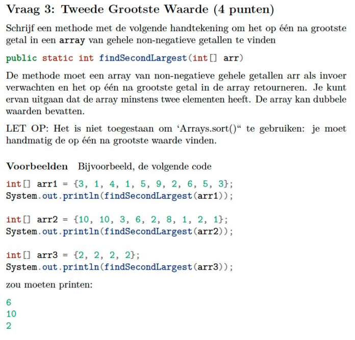
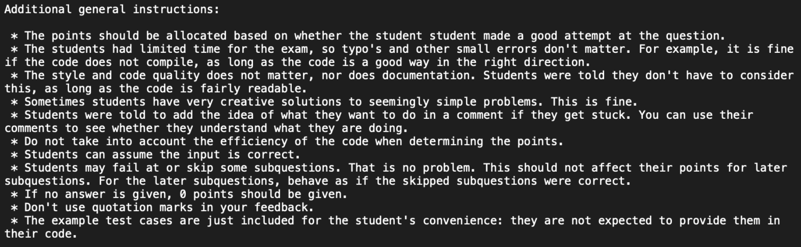
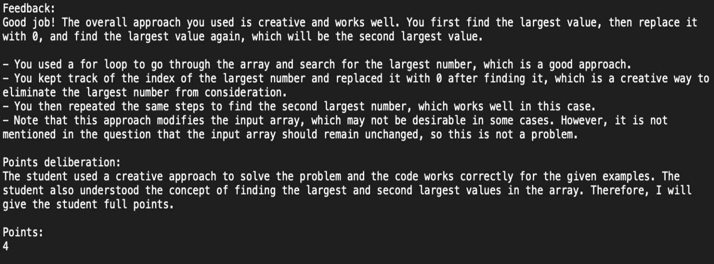
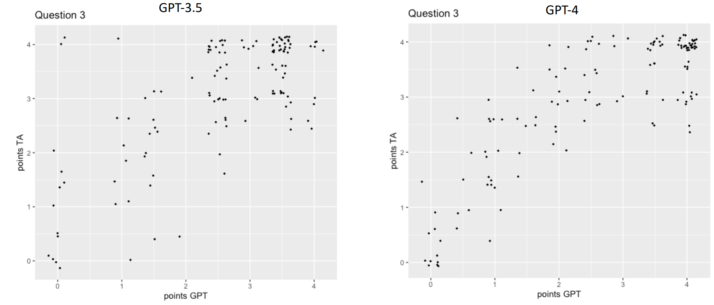
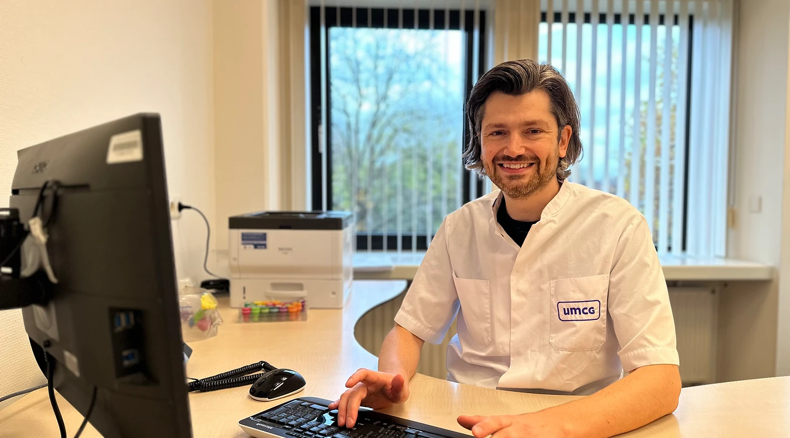
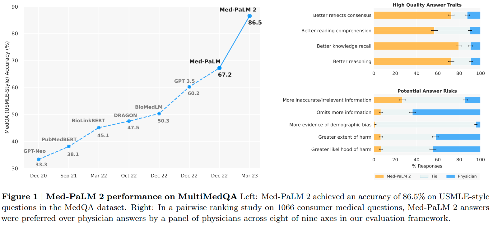

Increased efficiency with LLMs
A few highlighting projects
2023-11-17
Generative AI for exams
Programming Exam Evaluation - Dr. Nick Koning
- A practical example of LLM usage at the EUR
- Graciously provided for this MC by Dr. Nick Koning
- Accesible yet innovative usecase
Context:
- Introduction to Programming Course - Java
- 16 TAs to help with grading
Exam Evaluation - Dr. Nick Koning
- Example question:
- Write code to find the second largest number in the sequence.
- {3, 1, 4, 5, 3, 2}
- 4

Exam Evaluation - Dr. Nick Koning
There are 3 scenarios:
Code runs and wit right answers AutoTest: full points
Code runs, but get’s wrong answers: Needs to be manually checked
Code doesn’t run: Needs to be manually checked
- Manually checking code for 400 students is a lot of work
- Can we automate this?
- ChatGPT??
Exam Evaluation - Dr. Nick Koning
How did he do it:
- Webinterface was not an option, used the API
- Organise students questions in seperate files

Exam Evaluation - Dr. Nick Koning
Quick observation:
- Out-of-the-box ChatGPT does not work
- Mediocre and inconsistent quality
Start Small!
- Just 3 students
- First graded them manually
- Main advantage of starting small:
- Fast
- Cheap
- Able to keep overview
- Spent 90% of time on finetuning prototype
Exam Evaluation - Dr. Nick Koning
Final instructions - Role + Task: 
Exam Evaluation - Dr. Nick Koning
Final instructions - Task: 
Exam Evaluation - Dr. Nick Koning
Final instructions - Task format: 
Exam Evaluation - Dr. Nick Koning
Results: 
Exam Evaluation - Dr. Nick Koning
Results: 
Exam Evaluation - Dr. Nick Koning
Integrated into exam environment:
Exams are graded as soon as student hands-in the work
Feedback + preliminary result in 2 minutes …
… not 2 weeks
Human-in-the-loop: Grading serves as input for the TA’s
- And if you don’t agree there is room for an appeal
Broadly available via the CodeGrade
Exam Evaluation - Dr. Nick Koning
Suggestions for next steps:
- Finetune a model for grading:
- Show don’t tell: It allows for more concise prompts as you’ve shown it what answers you expect
- Should align GPT grades better with TA grades
- Ask the model for Json output:
- Can use JSON mode introduced on Devday
- No need for regex parsing of response anymore
- Can use JSON mode introduced on Devday
Generative AI for healthcare
GPT4 answering patient questions in Groningen
GPT4 answering patient questions in Groningen
- UMCG get’s up to 1200 patient questions a week
- Hospital staff has little time to answers such questions
GPT4 answering patient questions in Groningen
- GPT4 integrated securely inside the EPD:
- Access to the relevant healthrecords
- Colaboration between EPIC (EPD company) and Microsoft.
GPT4 answering patient questions in Groningen
- Human-in-the-loop: GPT4 writes a draft
- Healthcare providers can correct and/or expand on answer given
- Research suggests people actually prefer GPT answers
Physicians versus GPT
- Chatbot responses preferred in 78.6% (95% CI, 75.0%-81.8%) of the 585 evaluations.
- Response length: physicians 52 [17-62] words vs Chatbot 211 [168-245] words
- The proportion of good or very good quality responses was higher for chatbot than physicians (chatbot: 78.5%, 95% CI, 72.3%-84.1%; physicians: 22.1%, 95% CI, 16.4%-28.2%;).
- The proportion of responses rated empathetic or very empathetic (≥4) was higher for chatbot than for physicians (physicians: 4.6%, 95% CI, 2.1%-7.7%; chatbot: 45.1%, 95% CI, 38.5%-51.8%)
GPT4 answering patient questions in Groningen
- Win-win
- Less pressure for doctors
- Better answers for patients
Healthcare specific LLMs such as med-PaLM2
16 May 2023 - Towards Expert-Level Medical Question Answering with Large Language Models
Generative AI for learning
Khanmigo as a socratic super tutor
Khanmigo as a socratic super tutor
- Get personalised help over a wide range of topics
- Socratic method based:
- Not giving answers
- Instead, ask thought provoking questions
- Less risk of bad answers due to isolated environment
Finding the right context to answer the question
Finding the right context to answer the question
- These solutions all have the following in common:
- LLM embedded in nicely defined context
- Most relevant information directly at hand as context for the model
- But what if finding the right context becomes harder?
Practical assignment day 2
- We’re going to implement our own RAG system
- Open question - is R really suitable for this?
- Little support for NLP compared to Python
- Basics should be fine
- I want to encourage creativity:
- If you have your own idea for a project…
- Or if you have your own dataset to work with…
- …Contact me and we can see if we can get it too work.
LLMs in Practice